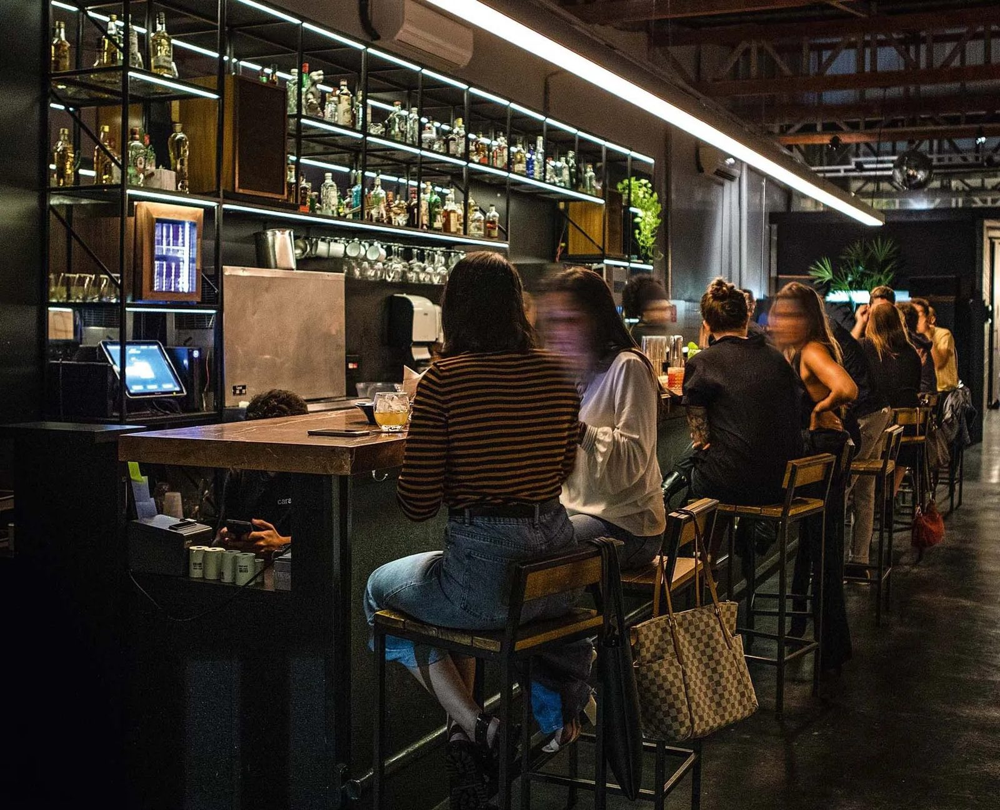
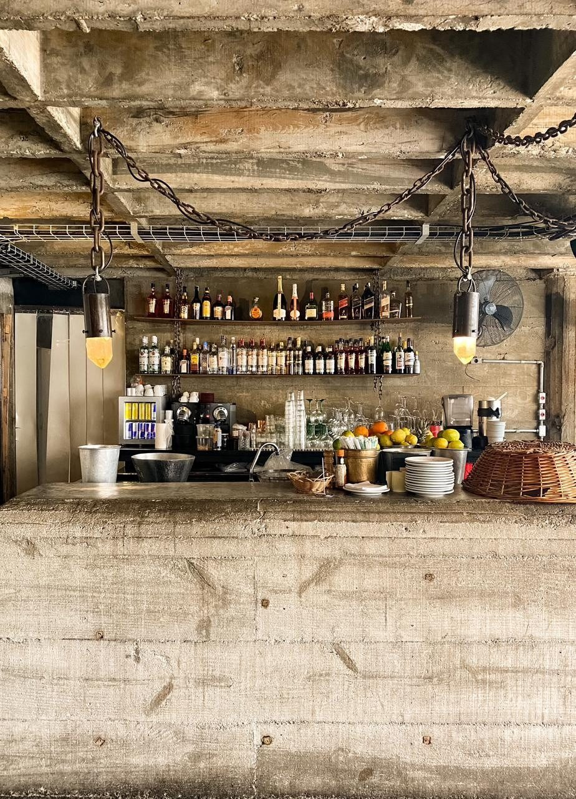
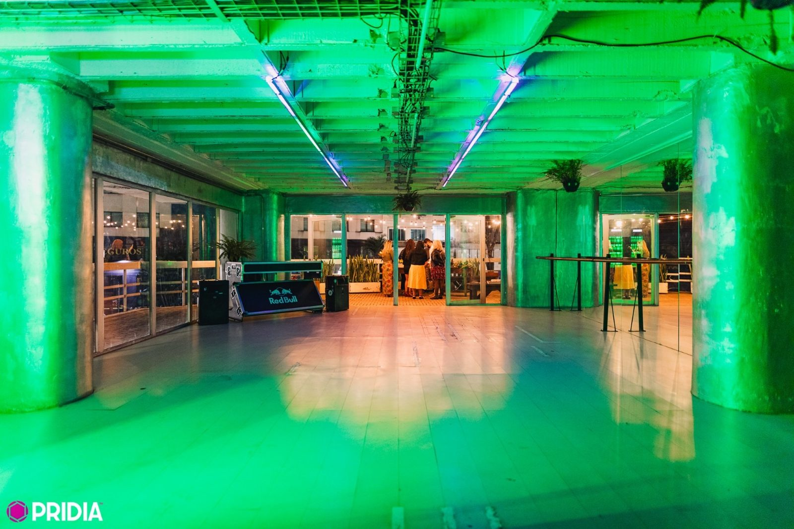

CaseTrade marketingOn premise
Exclusividade Red Bull nos bares e baladas que definem a noite do centro de São Paulo
O território era a região central da cidade, onde estão algumas das casas e festas mais influentes da noite paulistana. Com relacionamento e ativação, coloquei a Red Bull como marca exclusiva nesses lugares.



Desafio
Fortalecer a imagem e a presença da Red Bull nos pontos de consumo mais relevantes da noite, em uma região disputada por todas as marcas de bebida.
Meu papel
- Responsável pela região central de São Paulo.
- Relacionamento direto com casas, festas e influenciadores-chave da cena.
- Identificação de oportunidades de experimentação e consumo.
Como ativamos
- Geladeira Red Bull na casa.
- Presença no cardápio, com drinks assinados.
- Ponto extra de ativação só com Red Bull.
- No mínimo 3 SKUs de Red Bull em cada estabelecimento.
11Casas e festas com exclusividade
4Alavancas de ativação
3+SKUs por estabelecimento
Casas com exclusividade Red Bull
- Caracol
- Tokyo
- Cama de Gato
- Trago
- Estrago
- Orfeu
- Kaia
- Paribar
- Selvagem
- Gop Tun
- Batekoo
Presença no cardápio